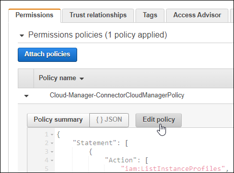
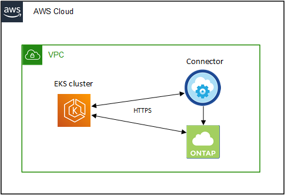
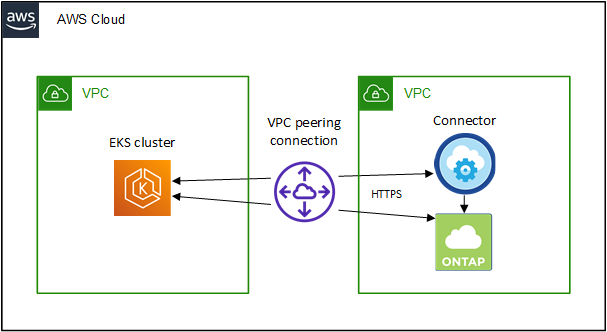

Amazon Web Services
Amazon Web Services
 Google Cloud
Google Cloud
 Microsoft Azure
Microsoft Azure
 请求文档变更
请求文档变更 在 GitHub 上编辑
在 GitHub 上编辑 提供者指南
提供者指南AWS 中 Kubernetes 集群的要求
您可以将 AWS 上的受管 Amazon Elastic Kubernetes Service （ EKS ）集群或自管 Kubernetes 集群添加到 Cloud Manager 。在将集群添加到 Cloud Manager 之前，您需要确保满足以下要求。

|
本主题使用 Kubernetes cluster ，其中 EKS 和自管理 Kubernetes 集群的配置相同。在配置不同的位置指定集群类型。 |
要求
- Astra Trident
-
需要使用四个最新版本的 Astra Trident 之一。您可以直接从 Cloud Manager 安装 Astra Trident 。您应该 "查看前提条件" 安装 Astra Trident 之前。
要升级 Astra Trident ， "使用操作员升级"。
- Cloud Volumes ONTAP
-
Cloud Volumes ONTAP for AWS 必须设置为集群的后端存储。 "有关配置步骤，请转至 Astra Trident 文档"。
- Cloud Manager Connector
-
必须使用所需权限在 AWS 中运行 Connector 。 在下方了解更多信息。
- 网络连接
-
Kubernetes 集群和 Connector 之间以及 Kubernetes 集群和 Cloud Volumes ONTAP 之间需要网络连接。 在下方了解更多信息。
- RBAC 授权
-
必须在每个 Kubernetes 集群上授权 Cloud Manager Connector 角色。 在下方了解更多信息。
准备连接器
要发现和管理 Kubernetes 集群， AWS 需要使用 Cloud Manager Connector 。您需要创建新的 Connector 或使用具有所需权限的现有 Connector 。
创建新的 Connector
按照以下链接之一中的步骤进行操作。
将所需权限添加到现有 Connector
从 3.9.13 版开始，任何 new 创建的 Connectors 均包含三个新的 AWS 权限，用于发现和管理 Kubernetes 集群。如果您在此版本之前创建了 Connector ，则需要修改此 Connector 的 IAM 角色的现有策略以提供权限。
-
转至 AWS 控制台并打开 EC2 服务。
-
选择 Connector 实例，单击 * 安全性 * ，然后单击 IAM 角色的名称以查看 IAM 服务中的角色。

-
在 * 权限 * 选项卡中，展开策略并单击 * 编辑策略 * 。

-
单击 * 。 JSON* ，然后在第一组操作下添加以下权限：
-
EC2：Describe注册
-
EKS：ListClusters
-
EKS：Describe集群
-
IAM：GetInstanceProfile
-
-
单击 * 查看策略 * ，然后单击 * 保存更改 * 。
查看网络连接要求
您需要在 Kubernetes 集群和 Connector 之间以及 Kubernetes 集群与为集群提供后端存储的 Cloud Volumes ONTAP 系统之间提供网络连接。
-
每个 Kubernetes 集群都必须与 Connector 建立入站连接
-
此连接器必须通过端口 443 与每个 Kubernetes 集群建立出站连接
提供此连接的最简单方法是，将连接器和 Cloud Volumes ONTAP 部署在与 Kubernetes 集群相同的 VPC 中。否则，您需要在不同的 VPC 之间设置 VPC 对等连接。
以下示例显示了同一 VPC 中的每个组件。

下面是另一个示例，显示了一个 EKS 集群在其他 VPC 上运行。在此示例中， VPC 对等关系可在 EKS 集群的 VPC 与连接器和 Cloud Volumes ONTAP 的 VPC 之间提供连接。

设置 RBAC 授权
您需要在每个 Kubernetes 集群上授权 Connector 角色，以便 Connector 可以发现和管理集群。
要启用不同的功能，需要不同的授权。
- 备份和还原
-
备份和还原只需要基本授权。
- 添加存储类
-
要使用 Cloud Manager 添加存储类，需要扩展授权。
- 安装 Astra Trident
-
要安装 Astra Trident ，您需要为 Cloud Manager 提供完全授权。
安装 Astra Trident 时， Cloud Manager 会安装 Astra Trident 后端和 Kubernetes 密钥，其中包含 Astra Trident 与存储集群通信所需的凭据。
-
创建集群角色和角色绑定。
-
根据您的授权要求创建包含以下文本的 YAML 文件。
备份 / 还原添加基本授权，以便为 Kubernetes 集群启用备份和还原。
apiVersion: rbac.authorization.k8s.io/v1 kind: ClusterRole metadata: name: cloudmanager-access-clusterrole rules: - apiGroups: - '' resources: - namespaces verbs: - list - apiGroups: - '' resources: - persistentvolumes verbs: - list - apiGroups: - '' resources: - pods - pods/exec verbs: - get - list - apiGroups: - '' resources: - persistentvolumeclaims verbs: - list - create - apiGroups: - storage.k8s.io resources: - storageclasses verbs: - list - apiGroups: - trident.netapp.io resources: - tridentbackends verbs: - list - apiGroups: - trident.netapp.io resources: - tridentorchestrators verbs: - get --- apiVersion: rbac.authorization.k8s.io/v1 kind: ClusterRoleBinding metadata: name: k8s-access-binding subjects: - kind: Group name: cloudmanager-access-group apiGroup: rbac.authorization.k8s.io roleRef: kind: ClusterRole name: cloudmanager-access-clusterrole apiGroup: rbac.authorization.k8s.io存储类添加扩展授权以使用 Cloud Manager 添加存储类。
apiVersion: rbac.authorization.k8s.io/v1 kind: ClusterRole metadata: name: cloudmanager-access-clusterrole rules: - apiGroups: - '' resources: - secrets - namespaces - persistentvolumeclaims - persistentvolumes - pods - pods/exec verbs: - get - list - create - delete - apiGroups: - storage.k8s.io resources: - storageclasses verbs: - get - create - list - delete - patch - apiGroups: - trident.netapp.io resources: - tridentbackends - tridentorchestrators - tridentbackendconfigs verbs: - get - list - create - delete --- apiVersion: rbac.authorization.k8s.io/v1 kind: ClusterRoleBinding metadata: name: k8s-access-binding subjects: - kind: Group name: cloudmanager-access-group apiGroup: rbac.authorization.k8s.io roleRef: kind: ClusterRole name: cloudmanager-access-clusterrole apiGroup: rbac.authorization.k8s.io安装 Trident使用命令行提供完全授权并启用 Cloud Manager 以安装 Astra Trident 。
eksctl create iamidentitymapping --cluster < > --region < > --arn < > --group "system:masters" --username system:node:{{EC2PrivateDNSName}} -
将配置应用于集群。
kubectl apply -f <file-name>
-
-
创建与权限组的标识映射。
使用 eksctl使用 eksctl 在集群与 Cloud Manager Connector 的 IAM 角色之间创建 IAM 身份映射。
下面提供了一个示例。
eksctl create iamidentitymapping --cluster <eksCluster> --region <us-east-2> --arn <ARN of the Connector IAM role> --group cloudmanager-access-group --username system:node:{{EC2PrivateDNSName}}编辑 AWS-auth直接编辑 AWS-auth ConfigMap ，以便为 Cloud Manager Connector 的 IAM 角色添加 RBAC 访问权限。
下面提供了一个示例。
apiVersion: v1 data: mapRoles: | - groups: - cloudmanager-access-group rolearn: <ARN of the Connector IAM role> username: system:node:{{EC2PrivateDNSName}} kind: ConfigMap metadata: creationTimestamp: "2021-09-30T21:09:18Z" name: aws-auth namespace: kube-system resourceVersion: "1021" selfLink: /api/v1/namespaces/kube-system/configmaps/aws-auth uid: dcc31de5-3838-11e8-af26-02e00430057c